Compose a skill
As an operator, I browse the /skills library — local and community, with a used-by count DERIVED from real agent composition — open a real skill's file package, browse forge's OOTB skill library — highly rated skills sourced from existing community libraries, provenance and stars shown — then edit one of forge's real shipped skills in place, author a brand-new skill from scratch through the library's one entry point, install a community package through the full draft→approve→re-review trust arc, and have a forge agent author one for me by resolving a real contract gap.
The /skills library — local + community, derived used-by
The library lists every plain composable skill in two sections — hand-authored (or already-installed) skills on disk, and community catalog entries not yet installed — with per-section counts that always equal the rendered card count, and a used-by count on every card that is DERIVED from real agent `composition.skills`, never a declared field.
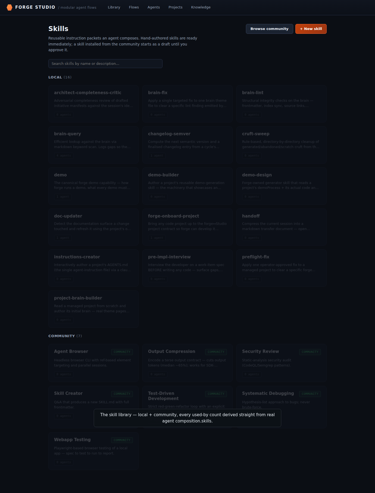
01-sk-0a-library.png — Part 2 (skills) — the /skills library: local + community sections, derived used-byA real skill's detail page — file package + used-by
The detail page for a real shipped skill renders its file package (SKILL.md plus every supporting file, tabbed) with a file count that matches the real files on disk, and the SAME derived used-by list the library card showed — the detail route and the library card agree on one real fact, not two independent guesses.
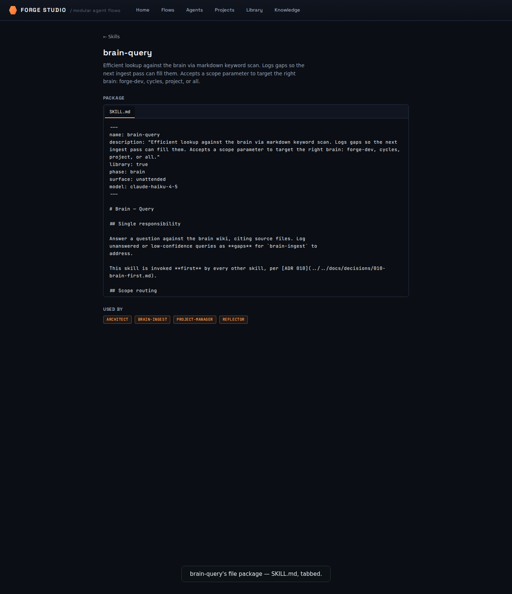
02-sk-0b-detail.png — Part 2 (skills) — /skills/brain-query: file package tabs + derived used-byOOTB skill library (community-sourced)
The catalog ships a library of community-sourced skills (superpowers, TDD, security-review, and more), each one carrying its source URL, provenance, and star count in the agent builder's palette — the operator can see exactly where a skill came from before dragging it in.
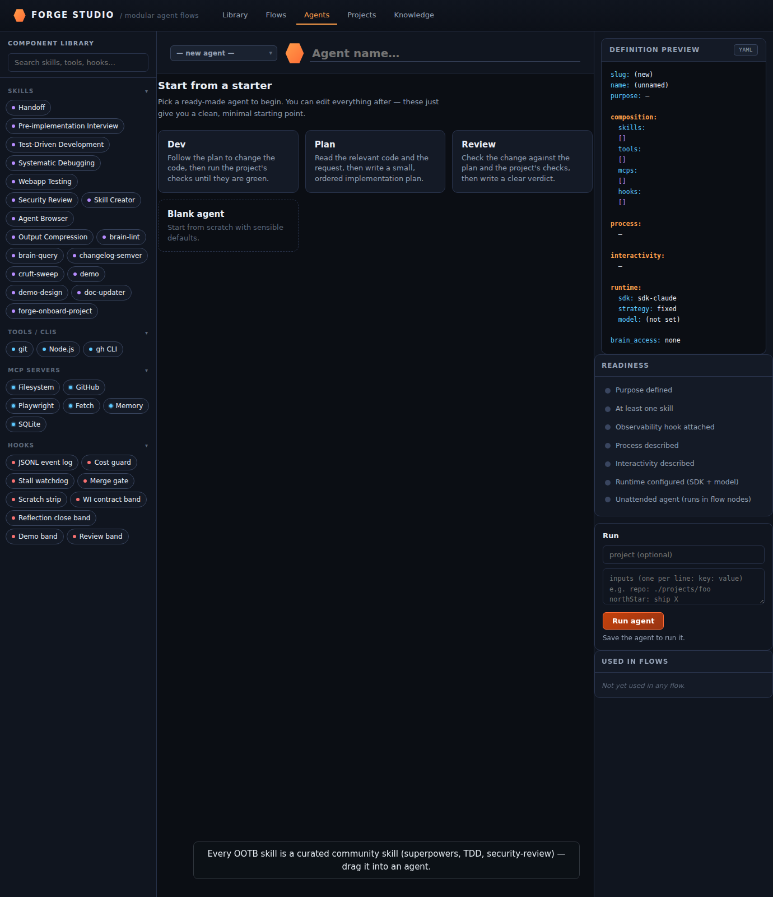
03-sk-0-library.png — Part 2 (skills) — the OOTB skill library, sourced from community reposEdit a real shipped skill
The operator opens one of forge's real shipped skills — project-scoped-review, the drift auditor — in the editor, appends a note to its instructions, and saves: the change lands in that skill's own SKILL.md on disk (restored to the shipped bytes right after), proving a shipped skill is editable text, not a black box.
clips/skill-edit.webm — discovering skills in the library, then editing a real shipped skill (project-scoped-review) in place — saved to its own SKILL.md, then restored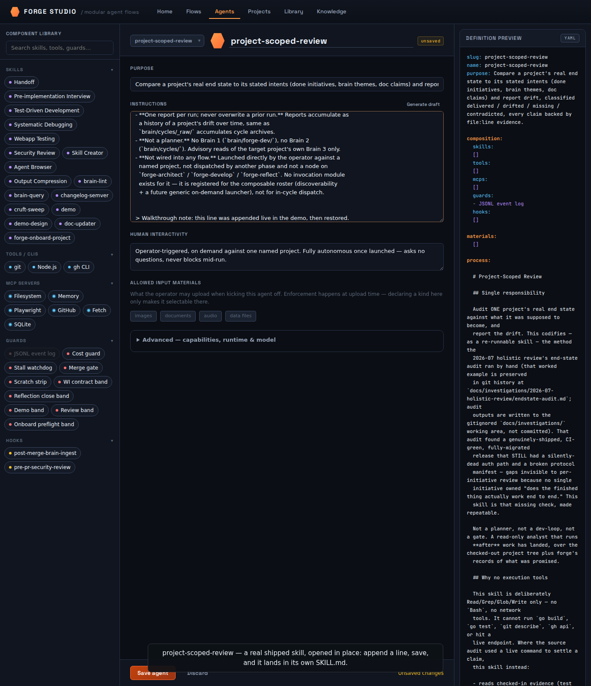
04-sk-1-edit.png — Part 2 (skills) — editing forge's real project-scoped-review skill in the builderAuthor a new skill
From a blank builder the operator names a brand-new skill, describes it in one line, and writes its instructions; clicking Create writes a fresh SKILL.md to the library and Studio lands in the agent builder to compose it — this created skill then threads through the rest of the walkthrough.
clips/sk-create.webm — discovering "+ author a skill" on a project page — authoring a new skill from scratch, Create writes its SKILL.md and lands in the agent builder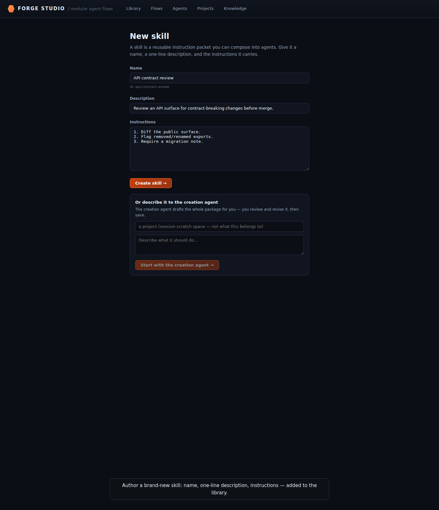
05-sk-2-create.png — Part 2 (skills) — authoring a brand-new skill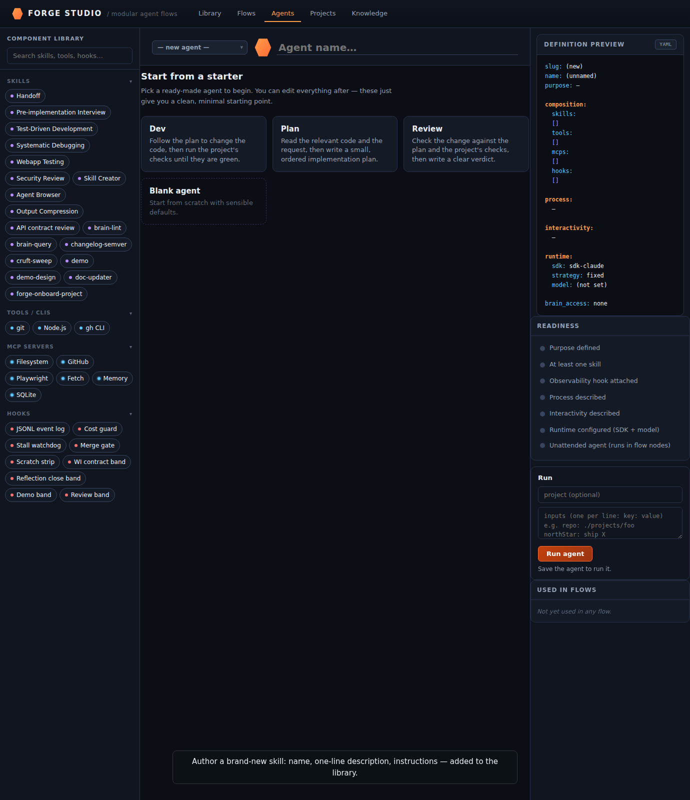
06-sk-3-created.png — Part 2 (skills) — new skill authored → SKILL.md on disk → Studio lands in the agent builder to compose itInstall a community package, approve it, then catch drift
The trust arc, end to end and real: a package materialised in a temp dir (never the repo) is installed through the bridge — landing quarantined as a draft, absent from the agent-builder palette — then approved for real through the UI, becoming palette-visible with its runtime: block still permanently quarantined (D4); mutating one byte of a non-SKILL.md package file afterwards flips it to needs-review and drops it back OUT of the palette, proving the drift check is enforced end to end, not just rendered.
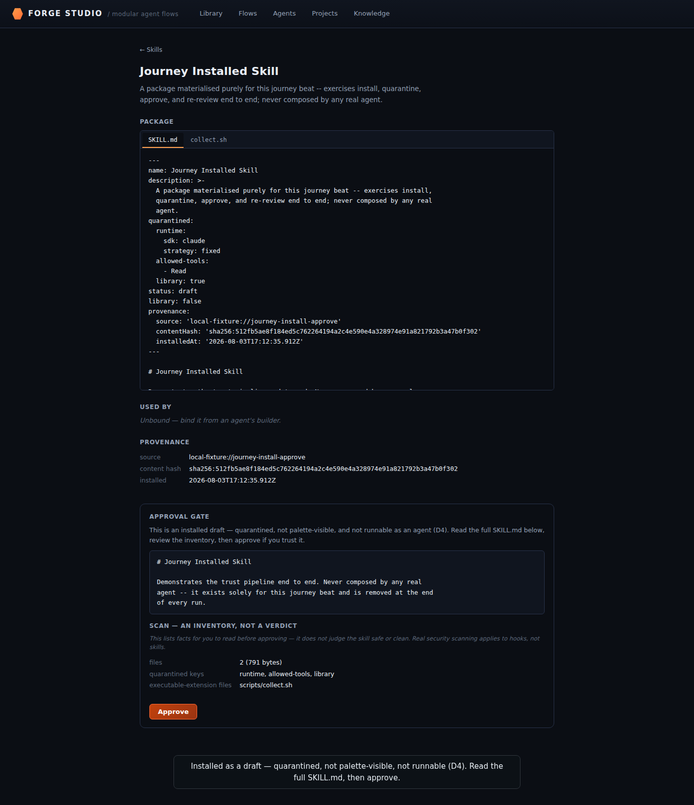
07-sk-7-install-draft.png — Part 2 (skills) — an installed package lands quarantined as a draft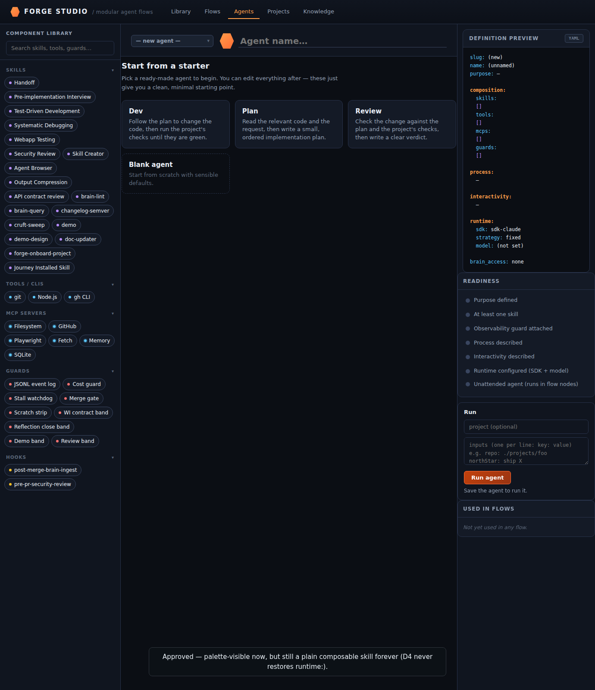
08-sk-8-approved-palette.png — Part 2 (skills) — approved: palette-visible, runtime: still quarantined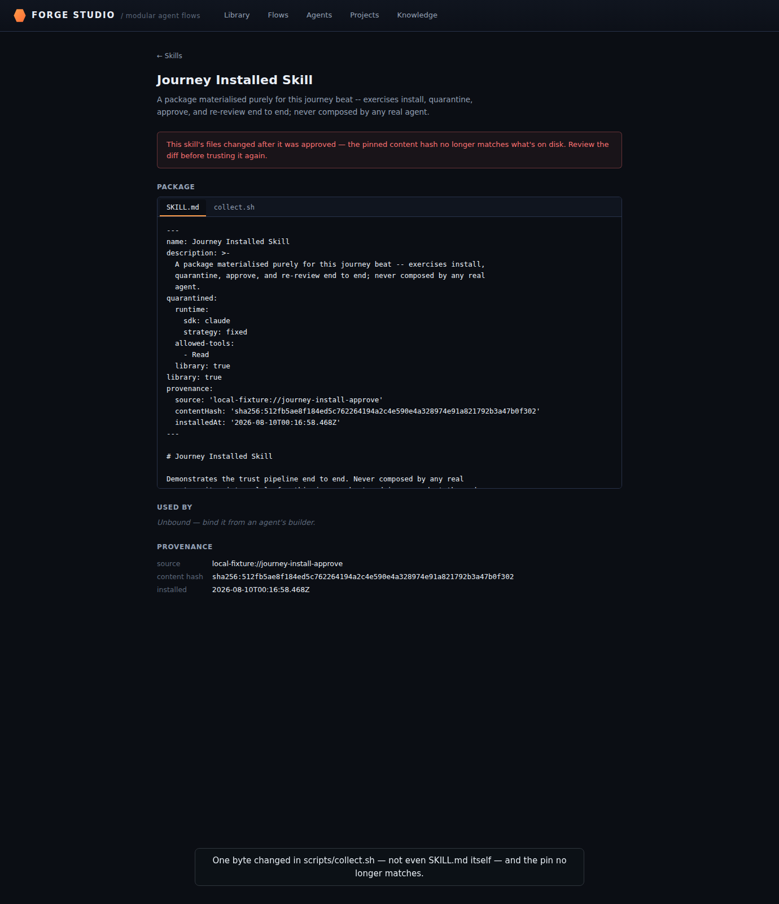
09-sk-9-needs-review.png — Part 2 (skills) — a package-file byte change flips it to needs-reviewAgentic skill authoring (contract gap → agent)
Skills don't only come from the library or the blank builder — forge's own agents author them. On the mdtoc project page the real contract preflight flags a genuine gap (a demoProcess is declared but the generated demo-design skill is missing) at the agent tier; one click on "Resolve with agent" routes it to the demo-builder. The generation itself is staged for this walkthrough (the same no-spawn seam every emulated agent turn uses): the harness hand-writes the exact SKILL.md the real agent produces, and the clause flips to resolved on the next preflight.
clips/skill-agentic.webm — a preflight contract gap resolved by an agent-authored skill (generation staged for the demo)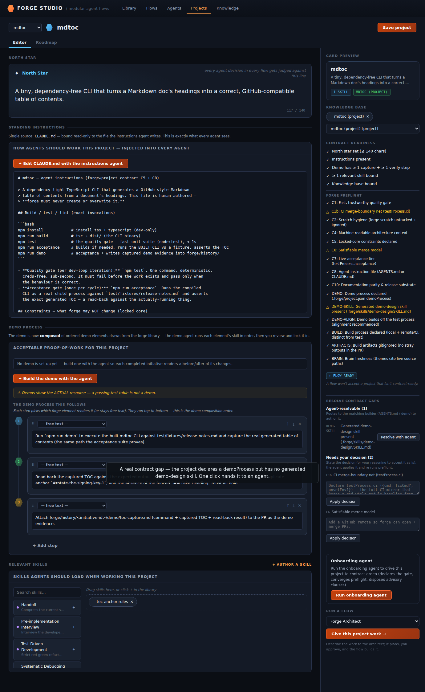
10-sk-4-clause.png — Part 2 (skills) — a real preflight gap offered for agentic resolution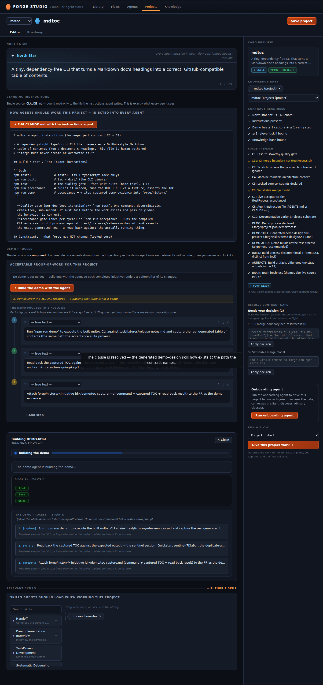
12-sk-6-resolved.png — Part 2 (skills) — the contract clause flipped to resolved by an agent-authored skillBrowse the templates library
As an operator, I browse the /templates library — planning artifacts, demo-output elements, and project scaffolds unified into one registry, grouped and searchable — then open a planning template's detail page to see its real definition and a used-by list DERIVED from the real flow graph, and open a project-scaffold's detail page to see its whole file tree rendered through the same file-package viewer /skills uses.
The /templates library — three categories, one registry
The templates library unifies three previously-siloed on-disk sources — planning artifact templates, demo-output elements, and project scaffolds — into one browsable registry, with per-category counts that always equal the rendered card count in each section.
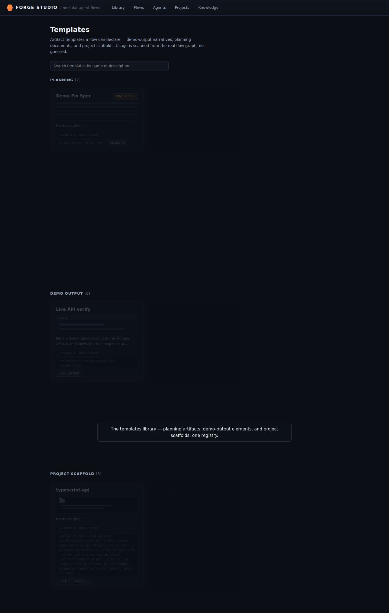
13-tpl-0-library.png — Part 2 (templates) — the /templates library: three categories, one registrySearch narrows to the real match
Typing into the search field filters by name and description across every category at once, live and client-side — a query matching exactly one real template narrows every section down to just that card.
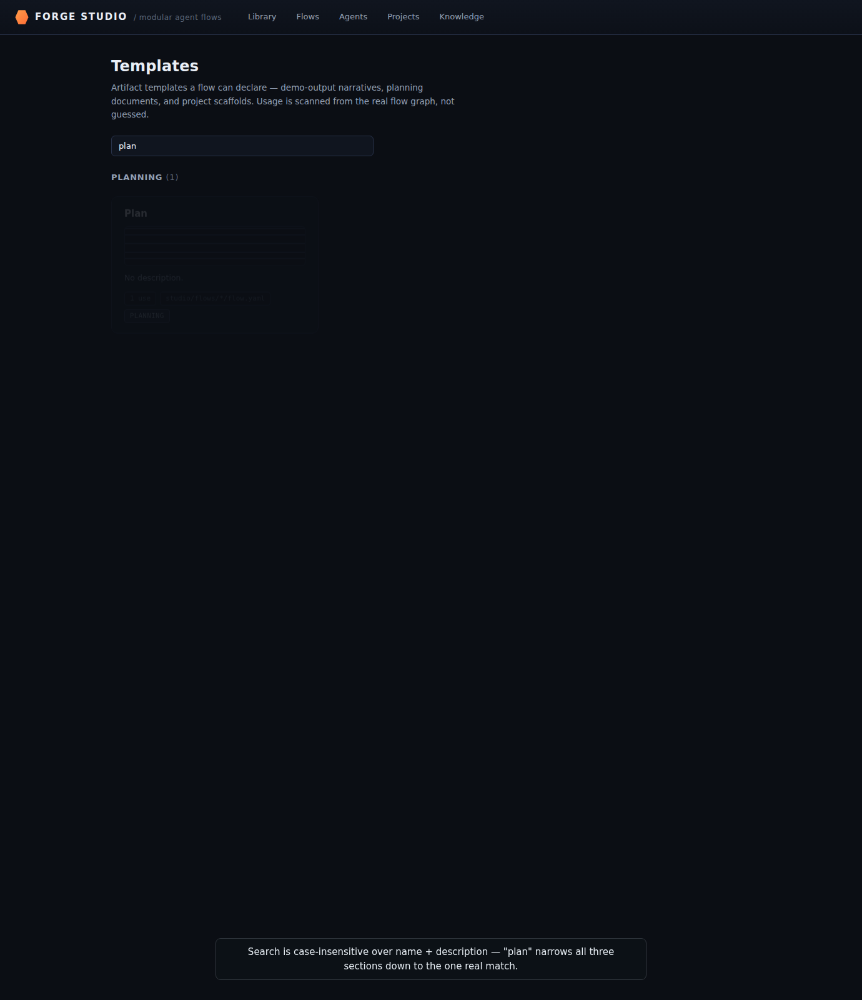
14-tpl-1-search.png — Part 2 (templates) — search narrows the library to the real matchA planning template's detail page — definition + derived used-by
The Plan template's detail page shows its real definition (format, provenance, definition ref) and a used-by list DERIVED from the real flow graph, never hand-maintained — the architect→project-manager edge in forge-architect is the only place "plan" is produced and consumed, and the page cross-checks its own declared producer/consumer against that edge, reporting the endpoints as verified.
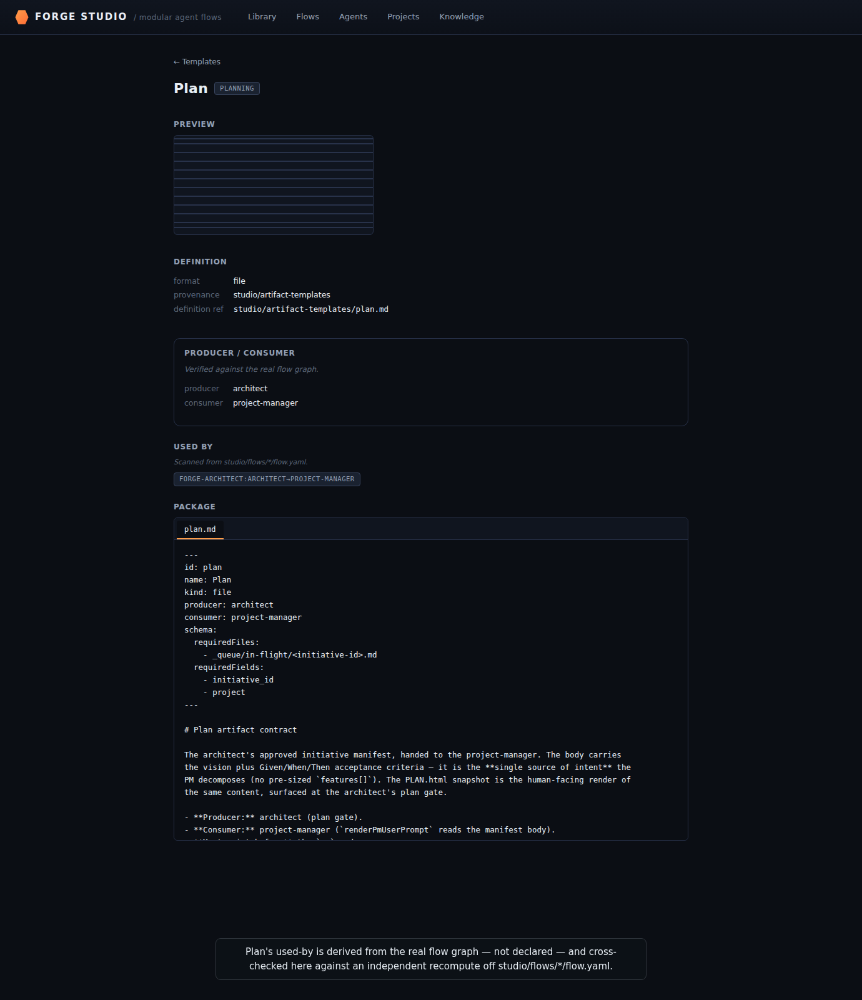
15-tpl-2-detail-planning.png — Part 2 (templates) — a planning template's detail page: definition + derived used-byA project-scaffold detail page — the real file tree
The typescript-cli scaffold's detail page renders its whole file tree through the SAME FilePackage component /skills/[id] uses — the file count on the page matches the real files on disk, tab by tab, kind-agnostic reuse of one shared component.
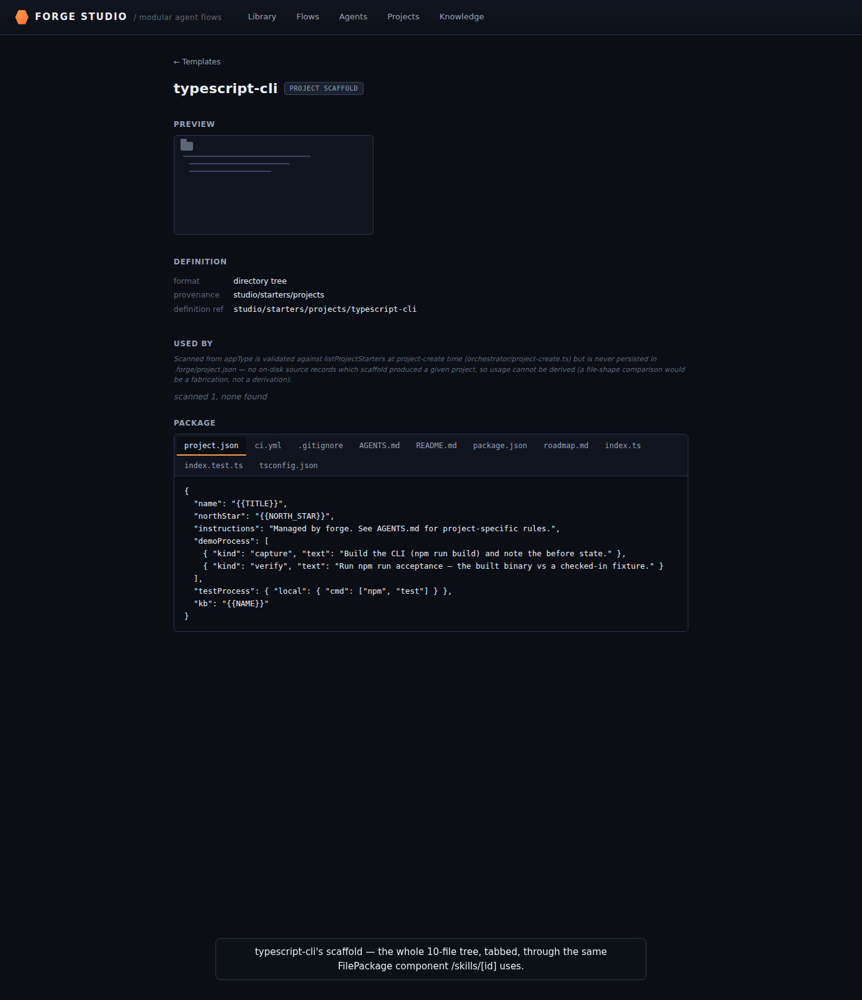
16-tpl-3-detail-scaffold.png — Part 2 (templates) — a project-scaffold detail page: the real file tree, tabbedStand up a project (onboard existing)
As an operator, I onboard an existing repository through the UI — the onboard-existing path of the capability diagram — and watch forge deterministically resolve it against the project contract until it is ready for development.
Onboard a project from the UI
Filling in only a name and north star (the quality gate defaults sensibly), the operator onboards a new project from the library; .forge/project.json lands on disk with the hard contract fields — now including a bound KB (R4-02-F3) — the project appears in the library, and `studio lint` stays green. From the project page the operator can hand the rest to the onboarding agent (R4-02): "Run onboarding agent" dispatches it through the same generic run host as the agent page, to drive the project to contract-green. A second, fresh pass re-drives the same form to show the contract-readiness checklist with its failures visible, before anything is resolved.
clips/onboard-form.webm — From the library — onboarding an existing repo, fresh, through to the contract-readiness checklist with failures visible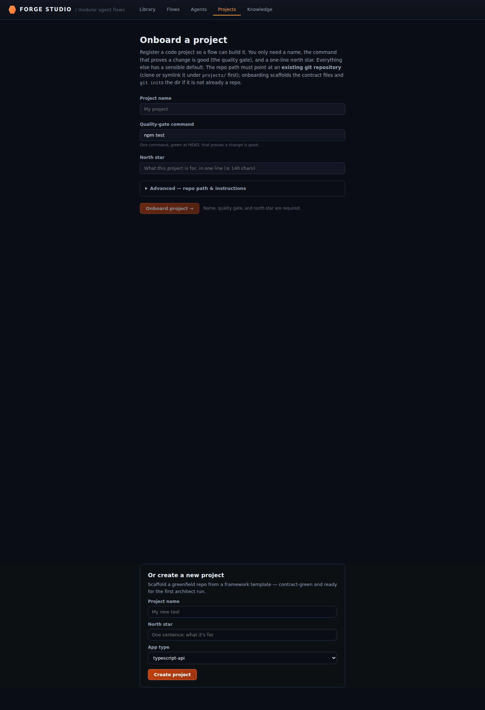
17-j4-0-onboard-form.png — J4 — onboard a project: required fields only (quality gate, north star)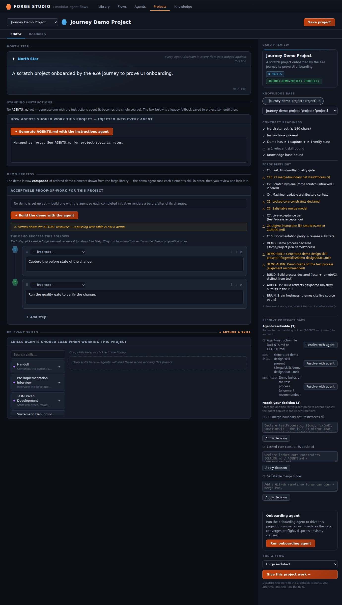
18-j4-1-project-readiness.png — J4 — onboarded project: contract readiness reflects the hard fields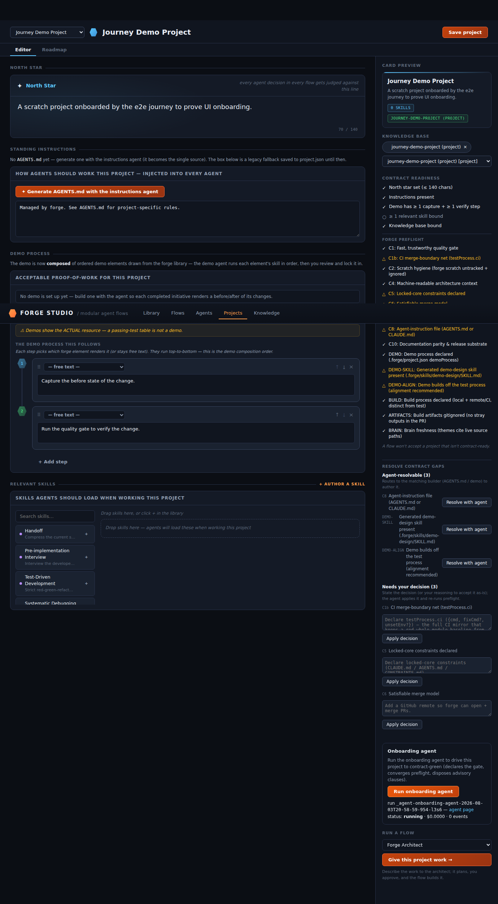
19-j4-2-onboard-agent.png — J4 — the onboarding agent dispatched from /projects (R4-02; turn stubbed under the demo no-spawn seam)onboard existing → deterministically resolve a failing clause
Onboarding a second, existing-style repo trips real contract clauses. The operator clicks the one auto-fix action for the deterministic gap, then routes the agent-resolvable AGENTS.md clause through the real "Resolve with agent" button — the click, the routing to the instructions builder, and the final re-scan are all real (generation itself is emulated, no live LLM turn) — until the project reports flow-ready.
clips/onboard-resolve.webm — A failing checklist, dwelt on, then resolved live: auto-fix → agent-resolvable → all-green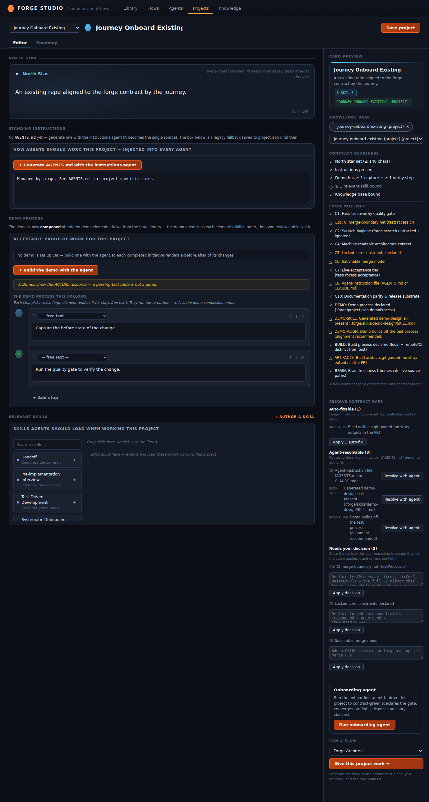
20-onb-0-failing.png — Part 1 — onboard existing: a contract clause fails preflight (auto-fixable)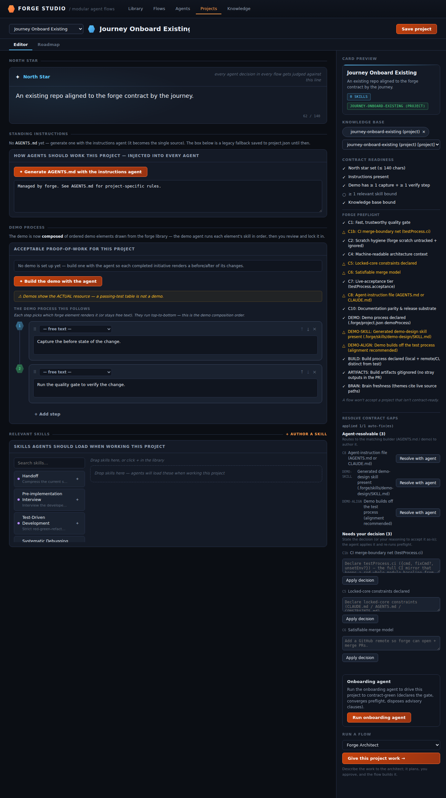
21-onb-1-resolved.png — Part 1 — clause auto-resolved: the existing repo is now contract-ready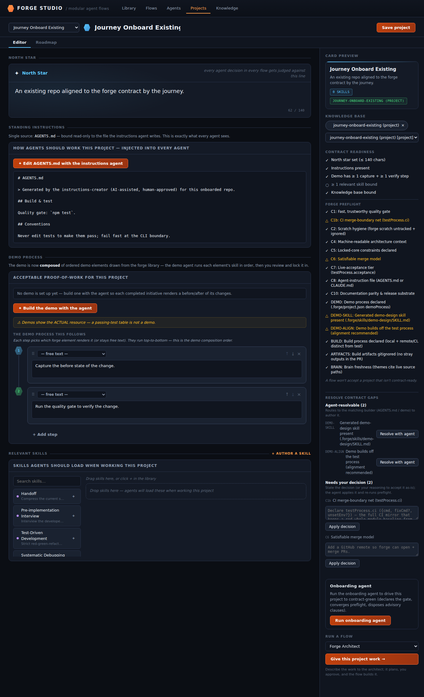
22-onb-2-agent-resolved.png — Part 1 — the agent-resolvable clause resolved via the real "Resolve with agent" button; flow-readyStand up a project (create new)
As an operator, I stand up a brand-new project from absolutely nothing through Studio's onboarding form — the create-new path of the capability diagram — then discover it from the library. AI-assisted instructions- and project-brain-builders seed its AGENTS.md and its seeded-to-grow knowledge base, while the project builder lets me tune north star, demo timeline, and contract readiness.
Create a project from nothing — /projects/new
The operator stands up a brand-new project from absolutely nothing — no repo, no contract, no brain — filling in a name, a north star, and a quality-gate command; the very same form that onboards an existing repo also creates one from scratch. Since the typed testProcess contract (R1-03), the scaffold declares the gate and preflight reads it — so a from-scratch project is born contract-GREEN on the hard clauses and opens straight into its own page, where the honest remaining gaps (no CI net yet, no instructions file, no demo) show as advisory rows.
clips/project-create.webm — From the library's "+ New Project" CTA — a second project created from nothing, live, born contract-green
23-a0-0-create-form.png — A0 — creating a project from nothing: name, north star, quality-gate command24-a0-1-contract-green-birth.png — A0 — a project created from nothing is contract-green at birth; only advisory gaps remain25-a0-2-project-page.png — A0 — the from-scratch project's own page: readiness checklist, north star, contract fields all realCreate a greenfield project from a framework template — /projects/new
Beyond onboarding an existing repo, the operator stands up a brand-new project from a curated framework template (R4-03): a name, a north star, and an app type (typescript-cli / typescript-api). Studio scaffolds the whole skeleton — package.json with a real quality gate, a unit test, .gitignore, an AGENTS.md that names the gate, roadmap, CI — seeds the central brain, and lands on the project page contract-green, ready for the first architect run. No manual repo surgery.
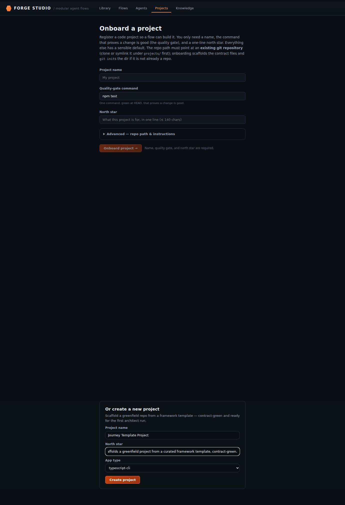
26-r4-03-0-create-form.png — R4-03 — create a greenfield project: name, north star, framework template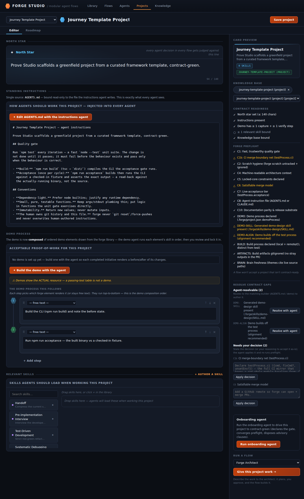
27-r4-03-1-project-ready.png — R4-03 — the greenfield project scaffolded from a template, contract-green on its own pageLibrary — everything is data
With a brand-new project just stood up from nothing, the library renders flows, agents, projects, and knowledge bases side by side as data cards, plus an operator-pulse panel — including the OOTB flows (forge-develop is the one the operator rebuilds from scratch, live, later in this walkthrough).
First-run orientation + discoverable creation
Creating from nothing didn't require a URL only a developer would know — the library's "+ New Agent" CTA proves creating something new is always one click away, and with the library already populated the first-run welcome panel correctly stays hidden.
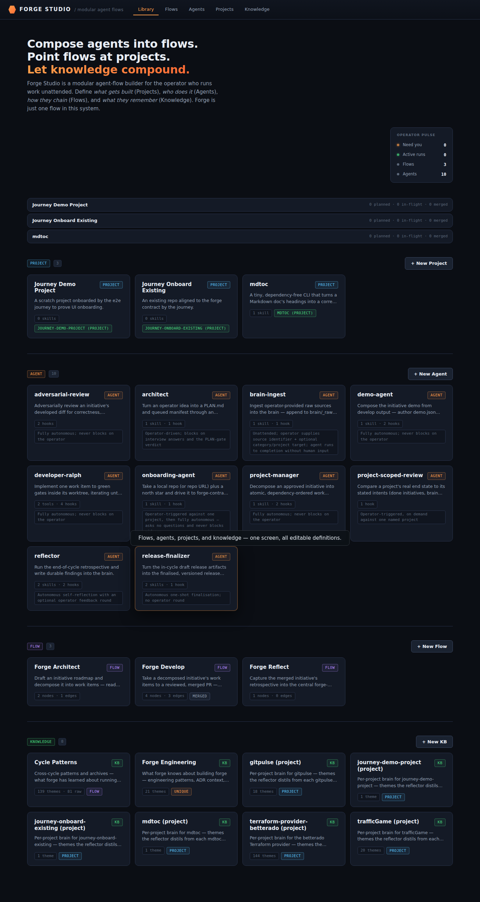
28-a1-1-library.png — A1 — Studio library: flows/agents/projects/KBs as data + operator pulseinstructions-creator — generate AGENTS.md (AI-assisted)
The operator launches the instructions-creator agent, answers its two clarifying questions, and approves the AGENTS.md it drafts — a new project gets its onboarding contract written for it, with a human still signing off.
clips/instr-generate.webm — clicking "Generate AGENTS.md with the instructions agent" on the project page — briefing → interviewing → drafting → the generated draft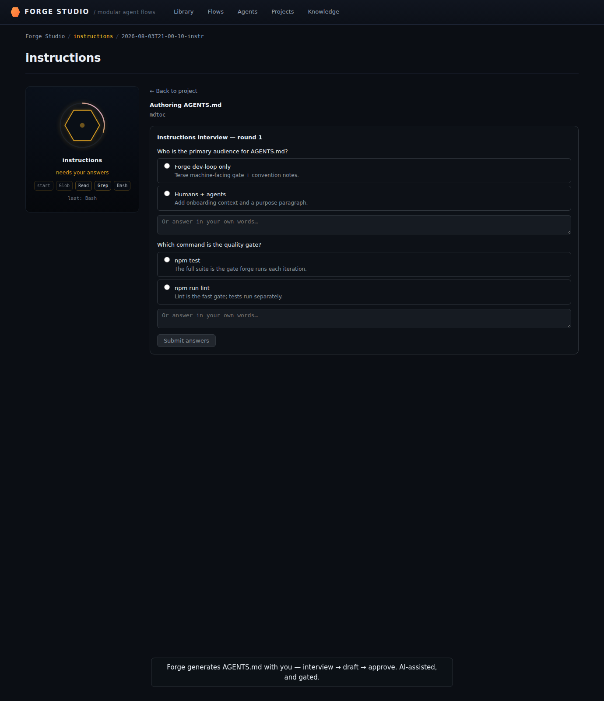
29-instr-0-interview.png — Part 1 — instructions-creator interviews before writing AGENTS.md (AI-assisted)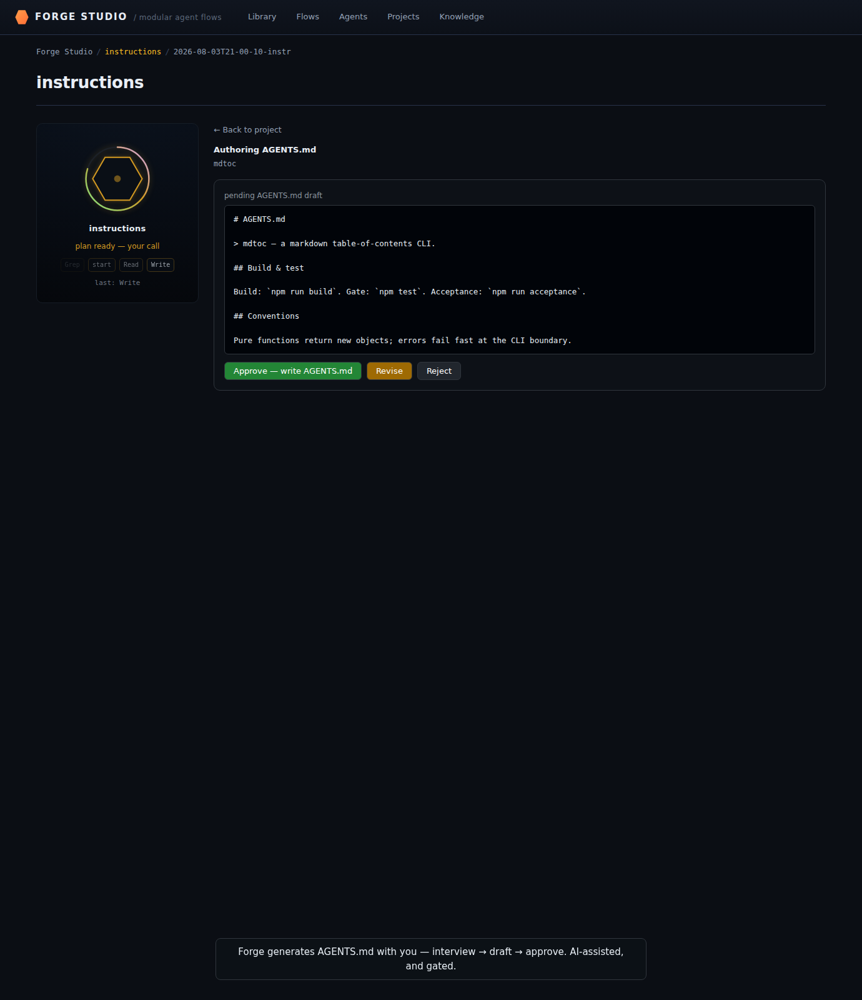
30-instr-1-draft.png — Part 1 — the generated AGENTS.md draft, awaiting approval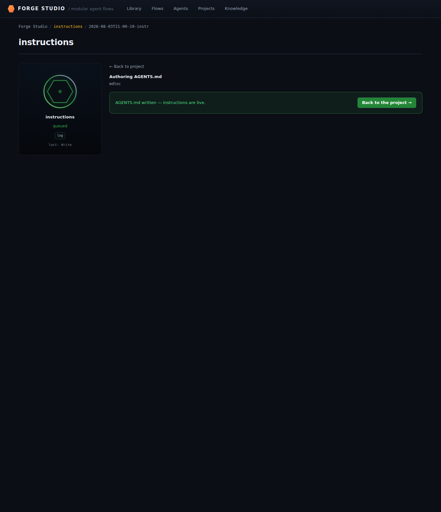
31-instr-2-committed.png — Part 1 — AGENTS.md generated + approved (AI-assisted)project-brain-builder — seed the project brain (AI-assisted)
The project-brain-builder analyses the new project and stages three seed themes for review; approving commits nothing but a pointer — the project's own knowledge base starts here and grows as cycles run.
clips/pbrain-generate.webm — the project page's "Build project brain with the agent" — briefing → analyzing → the generated seed themes, awaiting review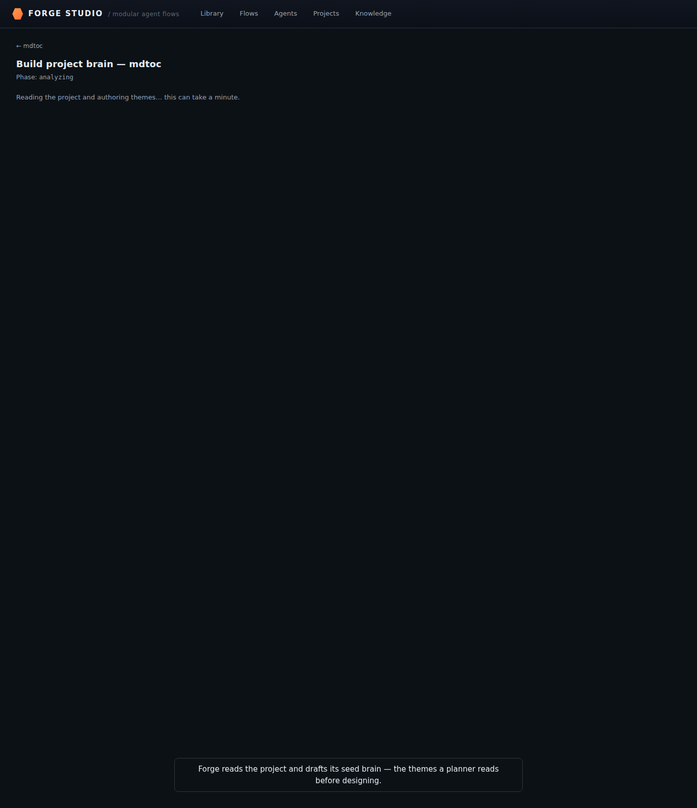
32-pbrain-0-analyzing.png — Part 1 — project-brain-builder analyses the project (AI-assisted)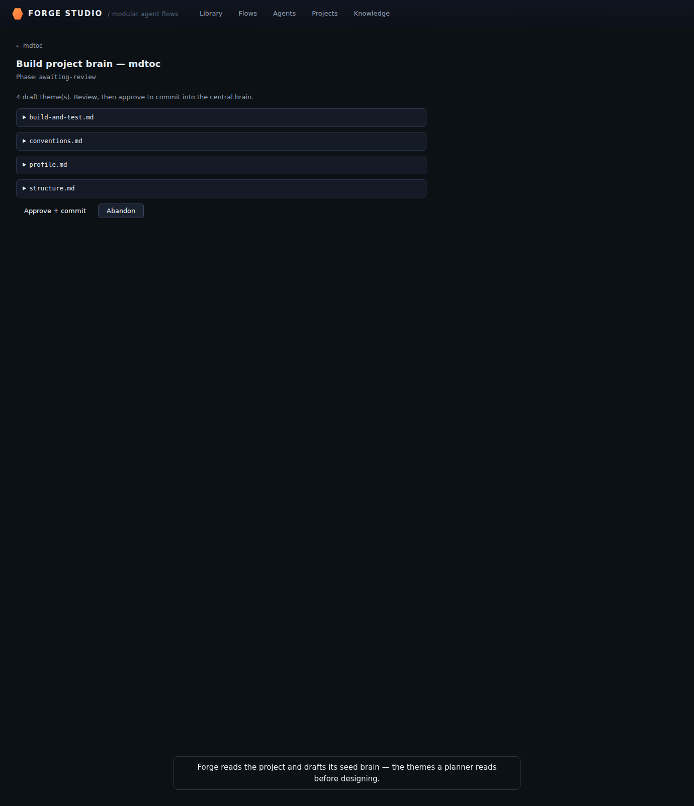
33-pbrain-1-review.png — Part 1 — the generated seed brain: themes to review + approve34-pbrain-2-committed.png — Part 1 — project brain seeded (grows with the project)Project builder — tune an existing project (/projects/mdtoc)
Contrast with the from-scratch project above: mdtoc already has real content, so its project builder shows the same north star, demo timeline, and contract-readiness surfaces already populated and tuneable at a glance; adding a demo step live-flips the dirty flag, proving nothing here is a static page.
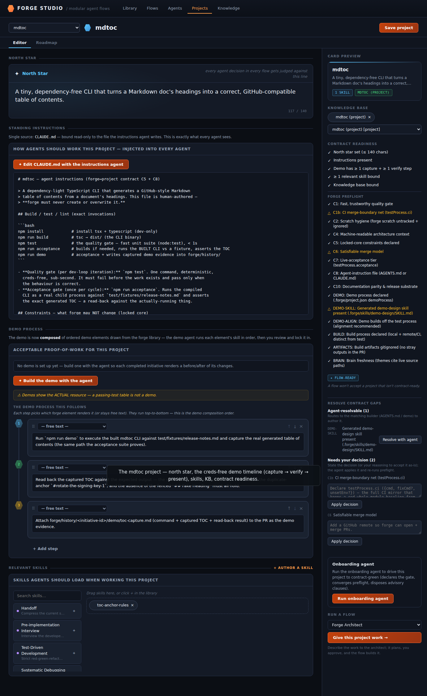
35-a4-0-project-builder.png — A4 — project builder: north star, demo timeline, skills, contract readiness36-a4-1-project-dirty.png — A4 — data-step-count incremented (3→4), data-dirty="true" (no save)Knowledge graph
As an operator, I browse the real cycles brain as a force-graph, pin a piece of human guidance onto it, and run lint/index maintenance — the knowledge pillar's OOTB brains, edited through both deterministic tooling and my own guidance-plus-ingest loop.
KB-backend seam — /knowledge?id=cycles (real brain)
The knowledge screen force-graphs the real cycles brain — theme and index nodes, KB health panel, a backend selector — and clicking a theme node opens its full article; this is the actual OOTB cross-cycle brain, not a mock graph.
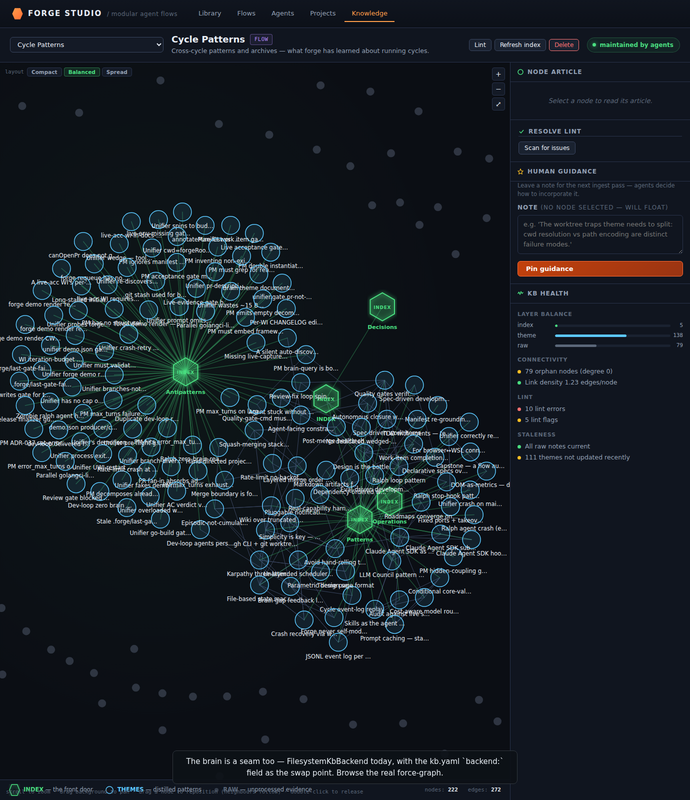
37-s3-0-kb-graph.png — S3 — /knowledge?id=cycles: force-graph rendered (222 nodes, real cycles brain)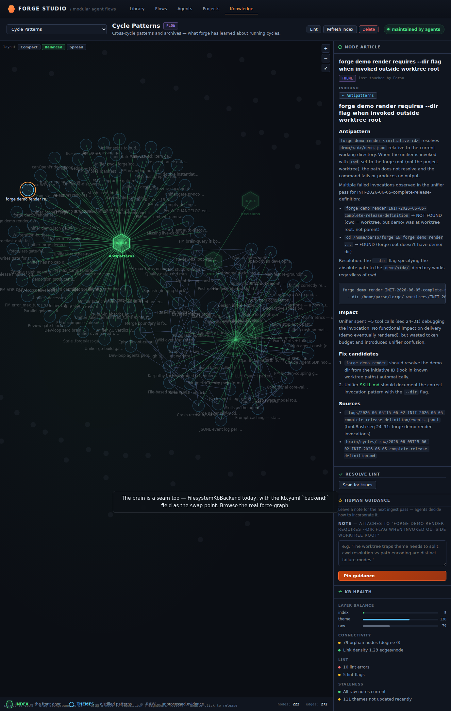
38-s3-0b-kb-node-article.png — S3 — theme node clicked: NODE ARTICLE panel visibleKB-backend seam — pin-guidance
The operator types a lesson straight into the HUMAN GUIDANCE panel and pins it; a guidance node appears in the graph immediately — human guidance is how the brain grows between ingest passes, visible as its own node until the next one folds it in.
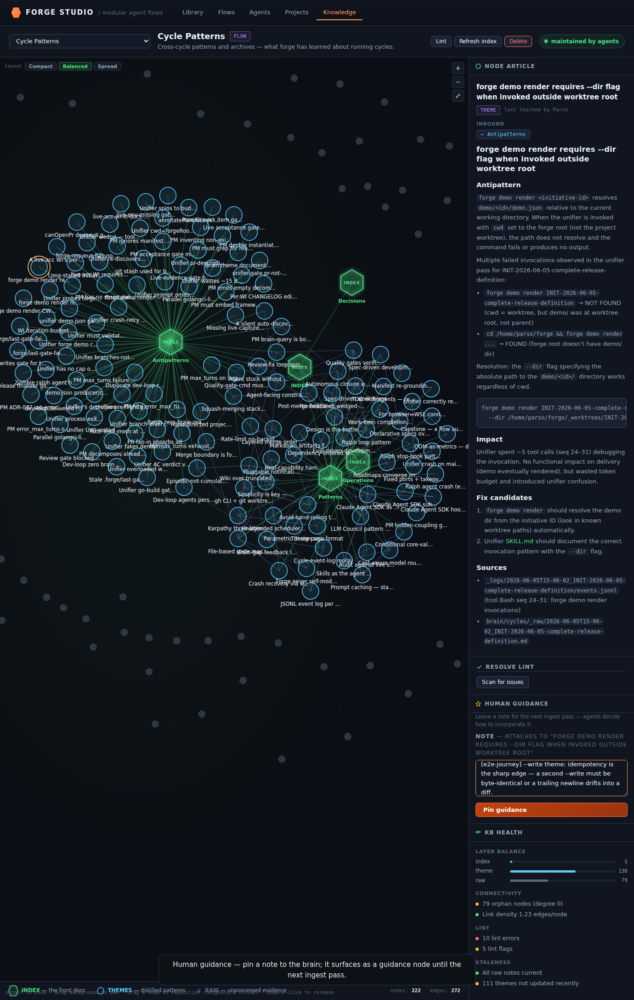
39-s3-1-guidance-typed.png — S3 — guidance text typed into the HUMAN GUIDANCE panel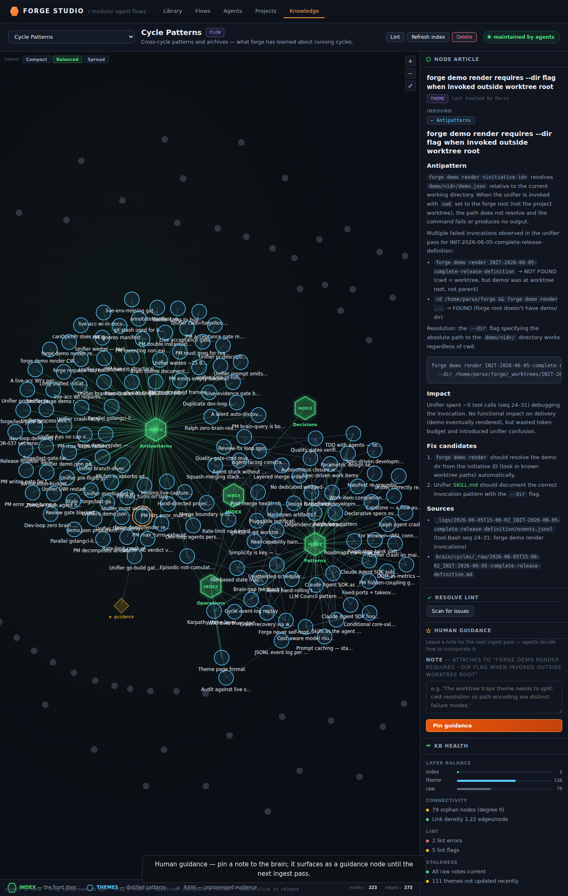
40-s3-1b-guidance-pinned.png — S3 — guidance pinned: data-guidance-pinned="true", guidance node in graphAuthor a KB from scratch — /knowledge/new
From a blank form the operator names a brand-new knowledge base, binds it to a flow, and describes it; creating it writes a fresh kb.yaml + themes/ + _raw/ under brain/ — a scratch KB this journey both creates and deletes itself, so the real cycles/forge-dev brains are never touched.
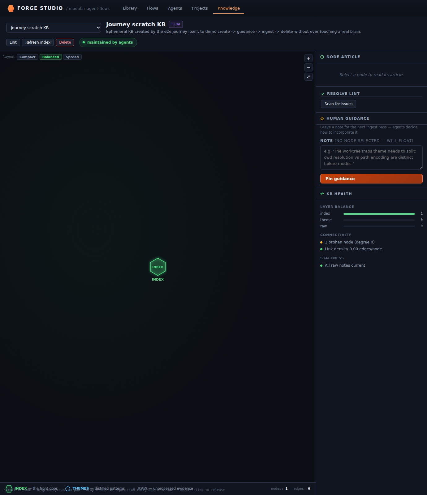
42-kb-3-scratch-empty.png — Knowledge — the new scratch KB's (near-empty) graph rendersPin guidance on the scratch KB, then emulate an ingest fold
The operator pins a guidance note onto the just-created scratch KB — the same panel used on the real cycles brain, proving the pin route targets whichever KB is open — then an ingest pass folds that note into a real theme file (an LLM pass in the real product, scripted here on a throwaway KB): the guidance node disappears, a theme node takes its place, and its article holds the folded lesson. The journey then deletes the scratch KB it created.
clips/kb-ingest.webm — From the library KB card to a folded theme — guidance becomes a real graph node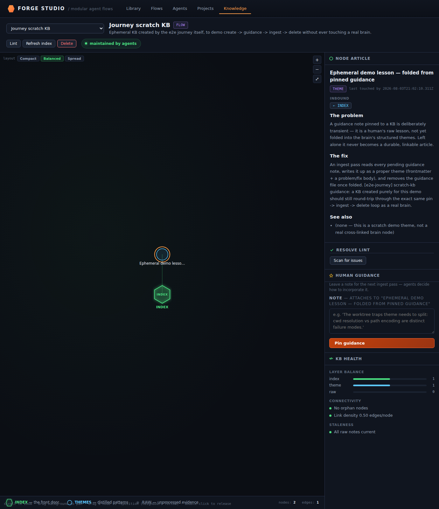
44-kb-5-scratch-theme.png — Knowledge — ingest folded: guidance -> theme node, article openKB maintenance — lint / index / OOTB brains
The operator runs the real kb-lint and kb-index actions from the maintenance panel — structural checks and a regenerated index, not cosmetic buttons — and the KB selector confirms both cycles and forge-dev ship as OOTB brains: the knowledge pillar is edited through lint/index tooling, on top of the human-guidance loop from the beat before.
clips/kb-lint.webm — KB lint findings triaged from the maintenance surface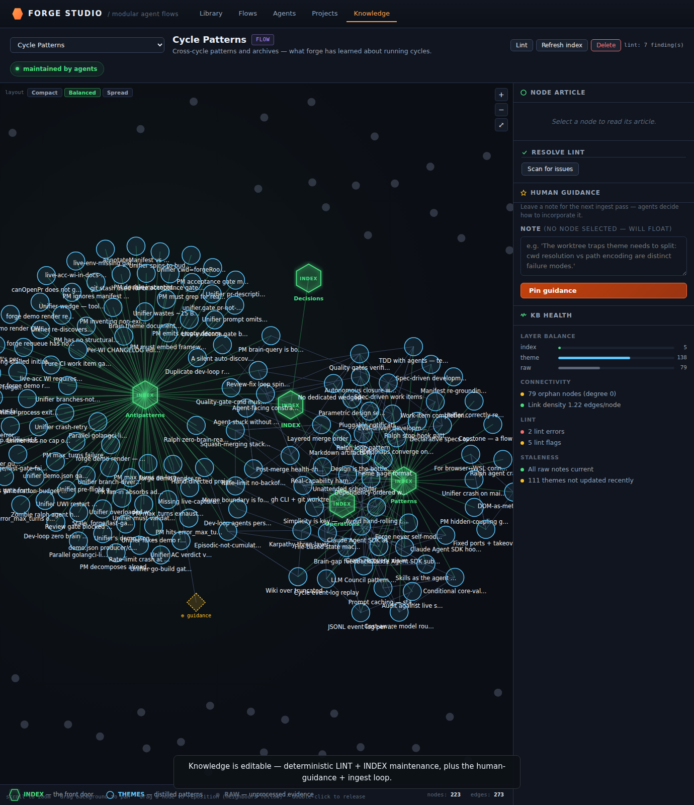
46-kb-0-lint.png — Part 2 (knowledge) — kb-lint: lint: 7 finding(s)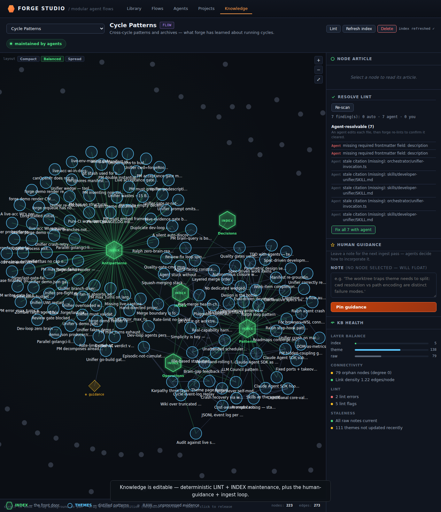
47-kb-1-maintenance.png — Part 2 (knowledge) — lint/index maintenance + the resolution surfaceCompose an agent
As an operator, I compose the three OOTB plan/dev/review agents from forge's curated starter library, build a brand-new agent entirely from scratch (blank slate, a dropped skill, a picked runtime), then reopen an existing agent to prove its composition — skills, tools, runtime, budgets — is editable, not fixed once built.
Author plan/dev/review agents from the starter library
The operator picks each of the three curated starters in turn — required fields pre-filled, advanced config collapsed — and saves each straight to a SKILL.md that then passes forge's own `studio lint` gate: the agents pillar's OOTB library, tuned through forge's own development, made concrete.
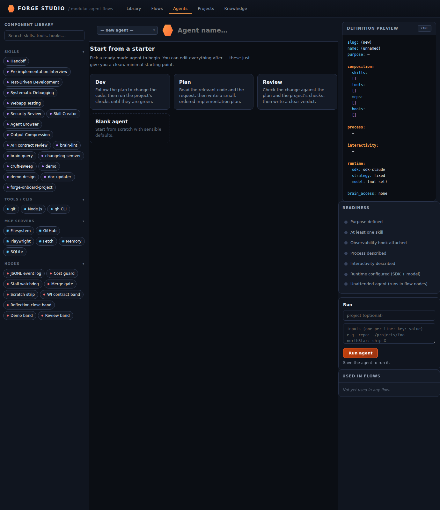
48-j2-0-starter-picker.png — J2 — new agent: pick a curated starter (plan/dev/review) or blank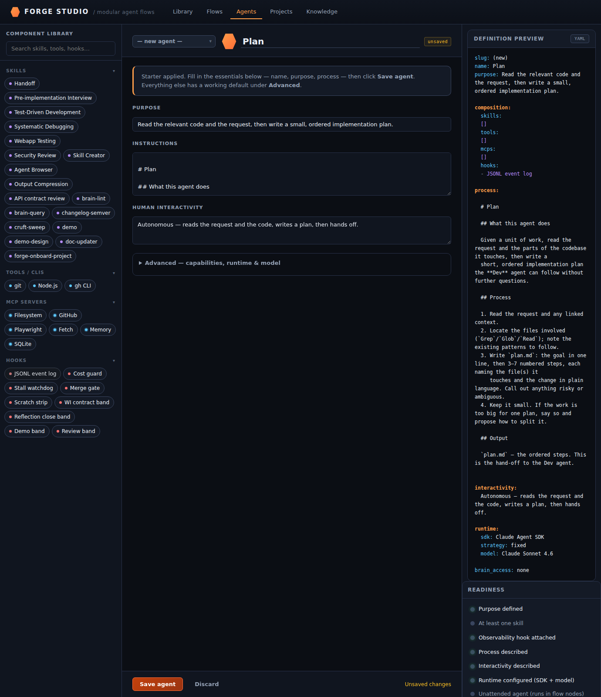
49-j2-1-builder-prefilled.png — J2 — starter pre-fills required fields; advanced collapsed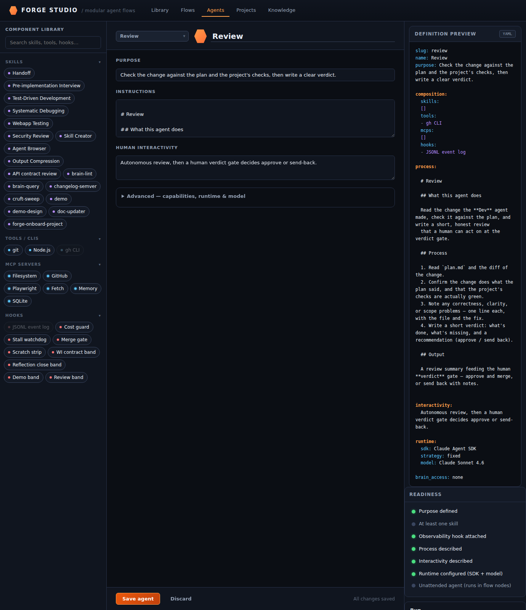
50-j2-2-agents-authored.png — J2 — plan/dev/review agents authored from starters, lint-greenCompose a brand-new agent from scratch (blank + skill drop + runtime picker)
Starting from the picker's genuine "blank" option — not a curated starter — the operator names the agent, writes its purpose and process from nothing, drags a real catalog skill into the skill zone by HTML5 drag-and-drop, then drives the runtime-adapter seam: claude selectable, codex/gemini visibly disabled, a range strategy picking multiple Claude tiers. Saving actually persists this one — SKILL.md lands with the picked range strategy baked in, and `studio lint` validates it.
clips/agent-scratch-build.webm — Composing an agent from scratch — blank, a dropped skill, a picked runtime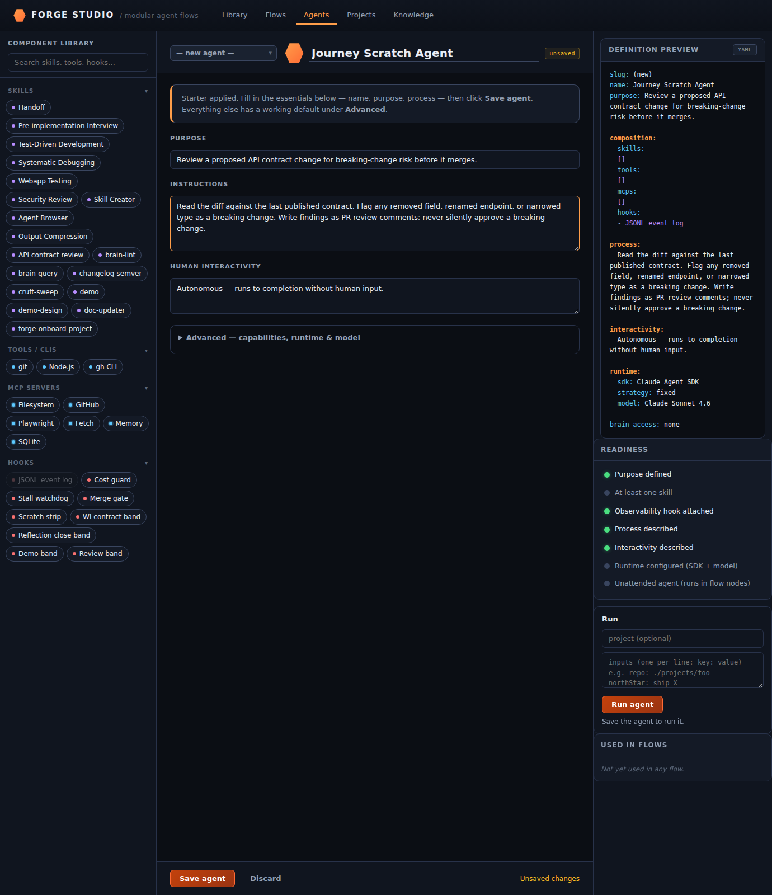
51-a-scratch-0-composed.png — A-scratch — a brand-new agent, composed from blank: name, purpose, process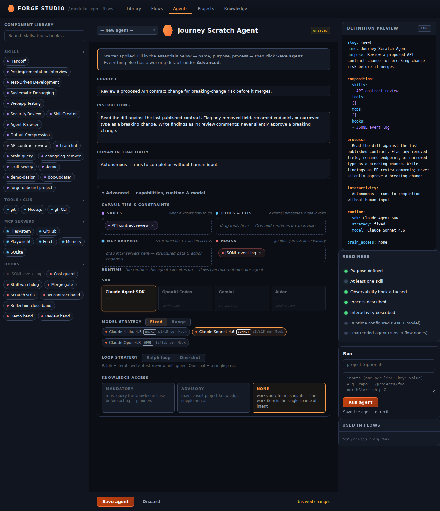
52-a-scratch-1-skill-dropped.png — A-scratch — "api-contract-review" (the skill created earlier in this walkthrough) dragged from the catalog into the skill zone (HTML5 DnD)53-a-scratch-2-sdk-picker.png — A-scratch — adapter seam: claude selectable; codex/gemini disabled (registry-driven)Agent builder — /agents/project-manager
Reopening the shipped project-manager agent, the operator expands Advanced to see its skill/tool/MCP/hook drop zones and runtime SDK, edits its purpose field, and SAVES — proof an OOTB agent stays genuinely editable after the fact, not just re-composable from a fresh starter. Since R4-01 the plan agent is a MIGRATED artifact: its flow dispatch is declared data (the wi-contract hook, a one-shot loop strategy, budget caps in frontmatter — ADR-039), and the save round-trip provably preserves all of it, so editing in the builder can never silently break dispatch. The readiness panel's 6 checks (including runtime) are sourced from the server-computed capability descriptor, not a client guess, and an informational chip shows whether the agent is interactive or unattended straight from that same descriptor. Because it is unattended, the agent also carries a generic run surface (R2-01-F3): it dispatches standalone straight from the agent page — no flow required — the runnable primitive reaching the UI. The same surface makes the develop flow's two successor agents runnable in isolation (R4-10-F3): demo-agent and adversarial-review dispatch standalone through their FLOW pipeline (not a bare spawn), yielding the identical artifacts — the ship-both principle, valuable alone as well as in a flow. (The real shipped bytes are stashed first and restored after, so the walkthrough never leaves project-manager's production SKILL.md mutated.)
clips/agent-build.webm — From the library agent card to a saved edit — project-manager, reopened and tuned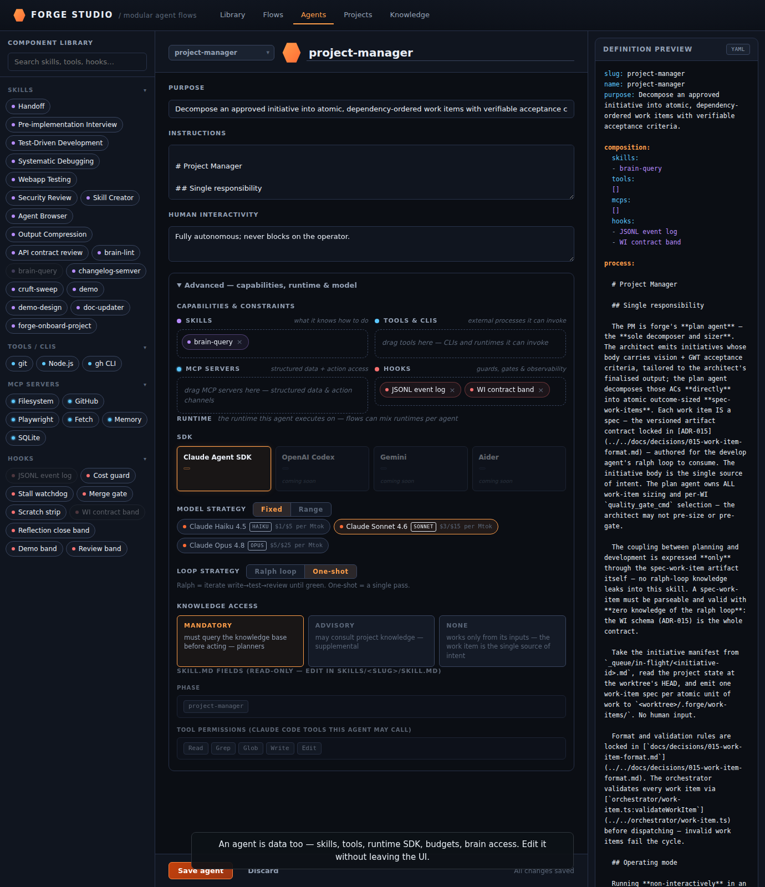
57-a3-0-agent-builder.png — A3 — agent builder: catalog, drop zones, runtime, readiness panel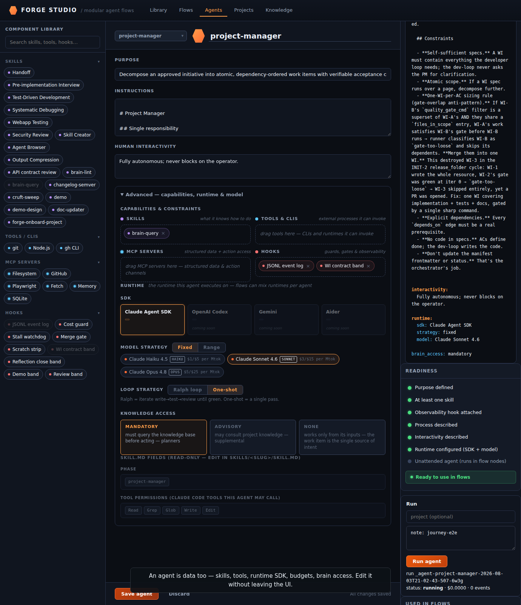
58-a3-0b-agent-run.png — A3 — a saved unattended agent runs standalone from the agent page (R2-01-F3 generic run host; turn stubbed under the demo no-spawn seam)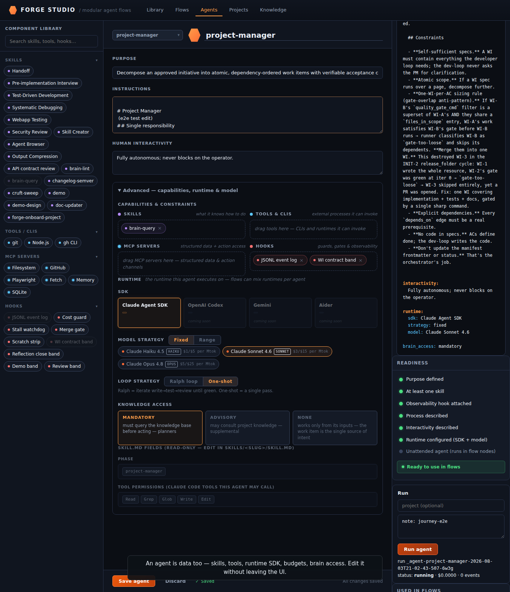
59-a3-1-agent-saved.png — A3 — data-dirty flips on edit; SAVE persists it to the real SKILL.md (restored after)Author a flow
As an operator, I author a brand-new cycle flow entirely as data — the flows pillar's user-creates path — stringing plan/dev/review agents together, handing the result real work, and genuinely rebuilding forge-develop from scratch in the live builder UI to prove it is topologically identical to the production seed.
String plan/dev/review into a flow (new-flow builder)
From the library's "+ New Flow" CTA, the canvas seeds itself from the basic starter (plan → dev → review, one verdict gate); the operator names and saves it, drags a node to a new position, and reloads — proving the authored flow, and its hand-arranged layout, both persist and pass `studio lint`.
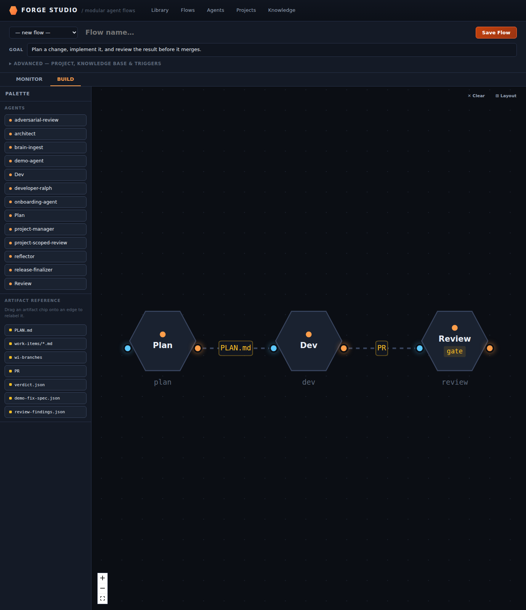
60-j3-0-new-flow-seeded.png — J3 — new flow seeded from the basic starter (plan → dev → review)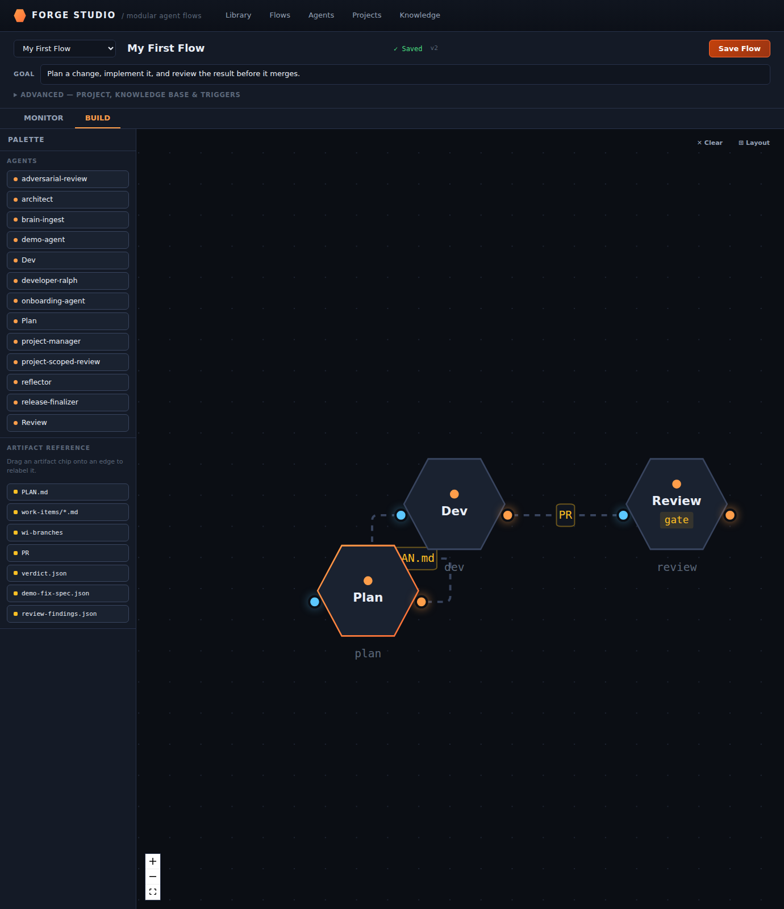
61-j3-1-flow-arranged.png — J3 — authored flow, node hand-arranged on the canvas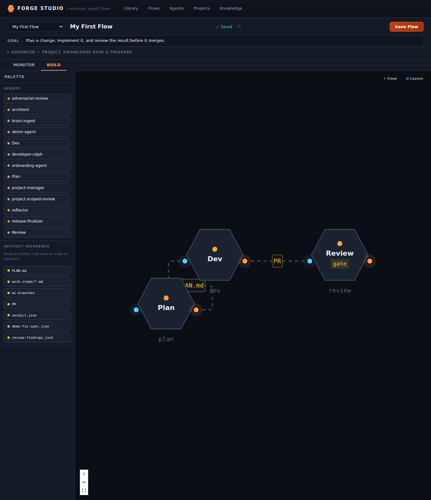
62-j3-2-flow-persisted.png — J3 — node positions persist across reload (authored flow is durable)Build the forge-develop flow from scratch (flow-as-data)
The operator genuinely rebuilds forge-develop in the live builder. First, the BUILD tab's capability gate (R2-02-F3): an interactive agent's palette chip is greyed out and non-placeable, and even a raw drop naming it is rejected — both driven by the F1 capability descriptor, proven here against a one-shot fixture since no shipped library agent is presently declared interactive. Then: clear the seeded starter, drag four agents onto a blank canvas by HTML5 drag-and-drop, wire three edges by real ReactFlow handle-drag (labelling each via the ArtifactPicker), gate the terminal node, bind a KB, author a "merged" trigger via the kind selector (R2-04-F4 — on merged → Reflect, closing the trigger picker's formerly-unauthorable "merged" gap) and client-side-validate a cron pattern, name it, and save. `studio lint` validates the result and a topological compare (agent-ref multiset + edge artifact labels + gate placement — not literal node ids, which the canvas always auto-generates) proves it matches the production seed's shape. Two honest UI limits remain: the seed's bare, agent-less gate node cannot be reproduced exactly (every UI-saved node carries a concrete agent), and kickoff/cost-ceiling have no UI surface at all.
clips/flow-scratch-build.webm — From the library "+ New Flow" CTA to a saved, edge-proven flow — dev → demo → adversarial-review → gate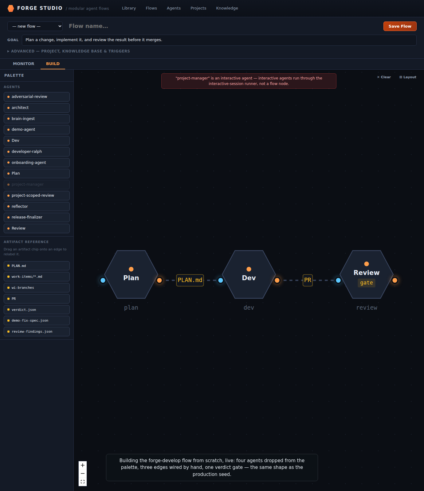
63-a2-0b-capability-gate.png — A2 — the BUILD tab gates interactive-agent placement (R2-02-F3): a non-placeable palette chip, and a rejected drop, both driven by the F1 capability descriptor64-a2-0-blank-canvas.png — A2 — a genuinely blank canvas: cleared, ready to author from scratch65-a2-1-nodes-dropped.png — A2 — dev → demo → adversarial-review → gate agent nodes dropped from the palette (real HTML5 DnD)Give the authored flow work (seeded run on my-first-flow)
The freshly authored flow is handed a real run: its own plan/dev/review hexes progress and park at the verdict gate, with per-phase cost accruing — proof a user-authored flow is a first-class citizen of the monitor, not a demo-only shell.
72-j5-0-authored-run.png — J5 — the authored flow, given work, runs plan → dev → review to the verdict gateRun a gated cycle
As an operator, I run a gated cycle end-to-end on a real mdtoc feature — idea to architect interview to PLAN gate to an autonomous build to a review gate to merge to reflection — monitoring flow progress and clearing every gate myself from the flow UI.
Operator drops the mdtoc idea
The operator types one real mdtoc feature idea into a single field and hits go — no form, no ceremony — and forge opens a fresh architect interview session to run with it.

73-r1-0-idea-typed.png — R1 — operator types a real mdtoc feature ideaArchitect grounds itself — P3 activity panel
Before asking a single question, the architect reads the CLI source and the brain — every tool call and reasoning line streams live into the activity panel, so the operator watches it ground itself in the real codebase rather than guess.
74-r1-1-activity-midstream.png — R1 (mid-stream) — P3 activity panel filling while the architect reads the CLI source75-r1-1-activity-settled.png — R1 (settled) — P3 activity panel: tool calls + reasoning rows persistedArchitect returns questions
The architect comes back with exactly two clarifying questions — schema default and acceptance fixture — asking only what it genuinely cannot resolve on its own.
76-r1-2-questions.png — R1 — architect returns 2 clarifying questions (schema design + acc fixture)Operator answers — P2 free-text override on Q2
The operator answers Q1 with a radio option but overrides Q2 entirely in free text; the question resolves on the typed answer and every radio stays unselected — proving the operator is never boxed into the offered choices.
clips/run-idea-interview.webm — From the new-idea box to the architect's clarifying questions — answered, one option and one in your own words77-r1-3-freetext.png — R1 — P2: operator types a free-text answer on Q2 (overriding the option list)79-r1-3b-drafting.png — R1 — planning: architect drafts with the answers folded inStall cameo — P1 StuckWarning
A staged stale heartbeat makes the architect look stuck for two minutes and the StuckWarning lights up; once the session resumes the warning clears on its own — the operator always sees when forge has gone quiet, and when it hasn't.
80-r1-4-stale-warning.png — R1 — P1: StuckWarning renders when the architect goes quiet for >2 minArchitect drafts — P4 real cost
The architect emits its plan and the hex greens at $0.00 — that's not a bug: real cycles meter the architect turn out-of-cycle, its duration tracked but its dollar cost billed elsewhere, and the demo owns that honestly rather than hiding it.
81-r1-5-architect-cost.png — R1 — P4: architect hex greens ($0.00 — real cycles meter it out-of-cycle)Rich PLAN.html (gate)
The plan gate presents the architect's output as rendered Given/When/Then acceptance-criteria cards, not raw markdown — the same PLAN.html the PM will read verbatim once approved.
clips/run-plan-gate.webm — From "Open the plan" to the gate itself — dwell on the plan, send-back in reach, holding on approve82-r2-0-plan-html.png — R2 — rich PLAN.html with Given/When/Then AC cardsSend-back + revised plan
The operator sends the plan back with one concrete piece of feedback (cover the no-markers case); the architect reruns and re-presents a revised plan carrying a "(revised)" badge — human gate #1, working as a real gate.
83-r2-1-send-back.png — R2 — operator sends the plan back with feedback84-r2-1b-revised-plan.png — R2 — revised plan re-presented with (revised) badgeApprove → watch it build
Approving the plan hands off to the second flow, Forge Develop; clicking "Watch it build" lands on its monitor, which shows only the develop slice's own hexes — while the same threaded run's architect slice, checked separately, sits complete on its own flow at that honest $0.00.
85-r2-2-approve.png — R2 — operator approves the plan (human decision #1 complete)86-r2-2b-monitor-landing.png — R2 — "Watch it build →" lands on the Studio flow monitor87-r2-2c-monitor-live.png — R2 — Forge Develop monitor shows the build slice live (run rail + topology)PM decomposes ACs into work items
The project-manager phase turns the plan's acceptance criteria into two dependency-ordered work items straight from Given/When/Then, not vague tasks; clicking either the phase hex or a WI hex opens its own drawer of detail.
88-r3-0-pm-midpulse.png — R3 (mid-pulse) — PM hex active as it emits work items89-r3-0b-pm-settled.png — R3 — PM decomposed ACs into 2 dependency-ordered work items90-hex-detail-phase.png — Phase drawer — phase hex opens the detail drawer (held open)Dev-loop TDD red — gate.expected-fail
The dev-loop's first move on WI-1 is a failing test — gate.expected-fail fires before any implementation exists — TDD is the loop's actual discipline, not a claim in a prompt.
92-r3-1-gate-fail.png — R3 — TDD red: gate.expected-fail — the inject test fails before src/inject.ts existsDev-loop GRIND (fast-forward)
The dev-loop keeps grinding on WI-1 (fast-forwarded here): tool calls accumulate and the token/cost bar climbs live — the operator can watch the actual work happen, not a spinner.
93-r3-2-grind.png — R3 (fast-forward) — dev-loop implementing WI-1; token/cost bar growingGate.pass + WI-1 green → WI-2 starts
WI-1's gate passes and only then does WI-2 — which declared WI-1 as a dependency — begin: the scheduler enforces the ordering the plan declared, visibly, rather than racing both work items at once.
94-r3-3-wi1-green.png — R3 — gate.pass; WI-1 green; WI-2 (depends on WI-1) only now starts95-r3-3b-devloop-green.png — R3 — dev-loop hex greens (both WIs done); the demo node runs next on its own hexDemo + adversarial review on their own hexes
With both work items green, R4-10's two successor agents run on their own hexes: the demo node composes the initiative demo from the develop output and authors both demo.json and the PR body (the unifier's relocated job), then the adversarial-review node critiques the diff across four lenses into a findings artifact the operator weighs at the verdict — the seam between many parallel WIs and one reviewable, critiqued change, made visible.
96-r3-4-demo-midpulse.png — R3 (mid-pulse) — demo hex active, composing demo.json + the PR body from the develop output97-r3-4b-demo-review-green.png — R3 — demo + adversarial-review nodes green on their own hexes (demo authored, diff critiqued)Cost rollup
The cycle badge sums exactly what dev-loop, demo, and adversarial-review already accrued ($1.75 + $0.73 + $0.47) — the rollup is arithmetic on real per-phase numbers the operator watched tick up, not a separate estimate.
clips/run-build-monitor.webm — From the library, into the flow monitor — WI fan-out, demo own-node, cost pills accruing98-r3-5-cost-rollup.png — R3 — cost rollup across the spine (Studio monitor)Review — comment-on-page visual demo (PARTIAL)
The review page renders the actual DEMO.md with a before/after slider and per-region comment anchors; AC-2 reads PARTIAL — a real gap surfaces before the operator ever has to decide anything.

99-r4-0-review-partial.png — R4 — review demo: AC-1 MET (CLI read-back), AC-2 PARTIAL (newline drift on re-write)100-r4-0b-slider.png — R4 — before/after image-comparison slider for the TOC region101-r4-0c-findings.png — R4-08 — the adversarial critique beside the demo evidence: one major finding on the idempotency ACSend-back — operator anchors a blocking comment to AC-2
The operator anchors a blocking comment directly on AC-2 instead of filling out a form; the page derives a send-back verdict from that comment alone, and it survives a reload — progressing the gate through the flow UI, on the artifact itself.
102-r4-1-comment.png — R4 — a blocking comment anchored to AC-2 (the send-back, on the page)103-r4-1b-send-back.png — R4 — the comment persists; the derived verdict is "send back"Cap exhaustion parks loudly (ADR-040)
The send-back loop is bounded: with the round cap already spent, one more send-back is rejected 409 and the initiative parks needs-operator — a greppable worktree marker, not a silent drop or an infinite loop.
Dev-loop reruns on feedback (fast-forward)
The anchored comment routes straight back to the dev-loop, which reruns on exactly that criterion and re-renders the demo — the send-back was real routing, not a dead-end button.
104-r4-2-rerun.png — R4 (fast-forward) — dev-loop reran on the new criterion; back to "Review →"Re-review — PARTIAL→MET
AC-2 now reads MET; resolving the original blocking comment flips the page's derived verdict from send-back back to approve — the loop closed on the operator's own criterion, not a generic re-run.
clips/run-verdict-gate.webm — From "Open gate" on the monitor into the verdict surface — demo comparison, resolved comment, holding on approve-and-merge105-r4-3-rereview-met.png — R4 — re-review: AC-2 now MET (PARTIAL→MET payoff)Approve & merge → completed spine
The operator approves and the PR merges for real; the run rail deliberately holds at "active" rather than "complete" while reflection is still in flight — a merged cycle genuinely isn't done until its lesson lands, and the monitor tells the truth about that.
106-r4-4-approve.png — R4 — operator approves (human decision #2 complete)107-r4-4b-reflect-link.png — R4 — merged; "Reflect on this cycle →" surfaces the final human moment108-r4-4c-spine-complete.png — R4 — merged; the spine holds at "active" while reflection finishes out-of-bandReflect
The operator answers the reflection questions — WI sizing, repeated actions, a free-text lesson — and only once that submits does the reflector write a brain theme and the run rail finally flips to complete.
clips/run-reflect-complete.webm — From the completed run’s review link to the reflection itself — the lesson banked, the run rail reading complete112-r5-0b-reflected.png — R5 — feedback captured; reflector folds it into the brain113-r5-1-reflect-flow.png — The Forge Reflect flow on its own monitor — the single reflect hex, fired automatically on mergeReflect (automated mode — R4-09-F3)
With no operator in the loop, the reflector runs in automated mode: it infers each answer from the cycle logs, demo, and diff and marks it inferred. The reflection screen renders those answers read-only with provenance badges — the operator sees exactly what forge concluded on their behalf, and there is nothing to submit.
114-r5-2-automated-reflection.png — R5 — automated reflection: inferred answers rendered read-only with provenance badgesFlow monitor deep-dive — /flows/forge-develop (Model B develop slice)
On a freshly gated run, clicking the demo hex opens its own drawer of phase log — every phase and WI hex from a live cycle stays this inspectable, not just while it's running.
115-s1-0-monitor.png — S1 — Forge Develop slice: WI fan-out + demo + adversarial-review + review116-s1-0b-monitor-drawer.png — S1 — phase drawer open: the demo node's phase log visibleEngine — start-run CTA (forge-develop-scratch, no runs)
On the from-scratch forge-develop-scratch flow — never yet run — the Start Run button is live and enabled, proving the engine can launch any authored flow directly from the UI, not only the seeded production ones.
117-s1-1-start-run.png — S1 — engine: Start Run CTA enabled on a flow with no runsEngine — gate control + cost on the gated run
A second run parks itself at its gate and links straight through to the verdict screen, its accrued cost metered against the flow's own ceiling — the operator progresses this gate from the monitor, not a separate tool.
118-s1-2-gate-control.png — S1 — engine: gated run parked, cost metered against the flow ceilingProject roadmap
As an operator, I browse a project's serpentine roadmap of initiatives over time and click "Start development" on a pending one — the roadmap extension proving the initiative timeline actually drives what forge builds next, not just a passive history view.
Per-project Roadmap tab
The Roadmap tab renders every initiative as a dot on a serpentine timeline; clicking a completed one pops a detail card listing its actual work items — the roadmap is read straight off real cycle history, not a hand-maintained list. The card also links straight to the project's demo surface (R4-07-F3), so demo upkeep is one click from initiative state.
119-r6-0-roadmap-tab.png — R6 — per-project Roadmap tab: the serpentine timeline of initiatives over timePlan trigger + blocked-until-planned lock (R4-11-F2)
A WI-less pending initiative shows a "Plan" trigger instead of "Start development" — a blocked-until-planned lock withholds development until it's actually decomposed. Clicking Plan repoints the manifest at the forge-architect flow so a real PM pass can produce work items.
122-r4-11-2-plan-trigger.png — R4-11-F2 — the Plan trigger + blocked-until-planned lock on a WI-less initiative123-r4-11-2b-planning-started.png — R4-11-F2 — planning started: the initiative will be decomposed into work itemsStart development trigger (DEC-3)
A decomposed-but-not-yet-built initiative offers "Start development" right on its roadmap card; clicking it repoints the manifest at the forge-develop flow and threads the architect-minted cycle id — the timeline itself is the trigger, not a separate queue command.
clips/roadmap-drive.webm — The operator reads the roadmap, pops a finished initiative’s card, then eyes the "Start development" trigger on the one queued up next125-r6-1b-development-started.png — R6 — development started: dev → demo → adversarial-review → verdict, ending at a PR for reviewRecovery affordances on a stuck initiative's card (R4-11-T3)
A recoverable initiative — in-flight, ready-for-review, or failed (never `merged`, a transient pass-through) — gets inspect/requeue/abandon right on its roadmap card, folded off the retired standalone /recovery page. Inspect reads the preserved worktree; under the harness's dry-bridge safety seam, requeue/abandon correctly refuse rather than perform a real git operation — the affordance's honest failure path, not a faked success.
126-r4-11-t3-0-recovery-affordances.png — R4-11-T3 — inspect/requeue/abandon on a recoverable initiative's roadmap cardRegenerate the demo page
As the operator, I regenerate a project's demo page element by element WITHOUT leaving the project page (R1-03-F2: the demo builder is an inline panel, not a detached route) — brief the agent, watch it compose the capture/verify/present trio, review the result, and lock it in as the reproducible artifact.
Brief the demo agent
The demo builder now lives ON the project page (R1-03-F2) — the operator opens the session inline, right beneath the demo timeline, and types one line of steering ("give the CLI capture more contrast") into a real briefing field before the agent touches anything. The regenerate isn't a blind rerun, and it isn't a separate screen.
129-demo-0-briefing.png — The demo agent — briefing before it runsThe demo agent composes the page, element by element
The agent works through all three demo-process steps — capture, verify, present — each one bound to its own element, then hands back an iframe preview for the operator to review before anything is locked in.
clips/demo-generate.webm — The demo builder, inline on the project page: briefed, then composing the page element by element — capture, verify, present131-demo-2-review.png — The demo agent — composed demo ready for reviewLock the demo in
Locking writes demo.lock.json plus a history entry to disk and simply closes the panel — the operator never left the project page. The regenerated demo becomes the one reproducible artifact for this cycle, not a throwaway preview.
132-demo-3-locked.png — The demo agent — locked in as the reproducible demo artifact